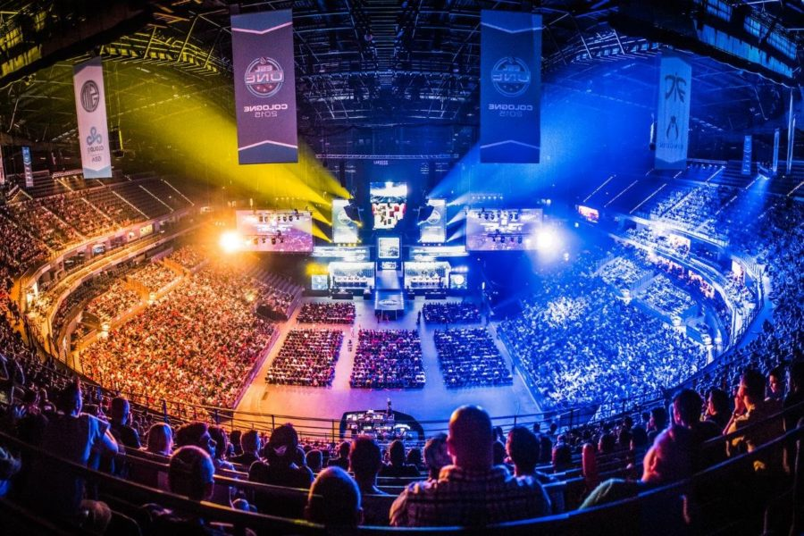
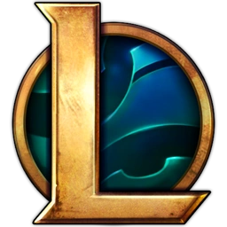
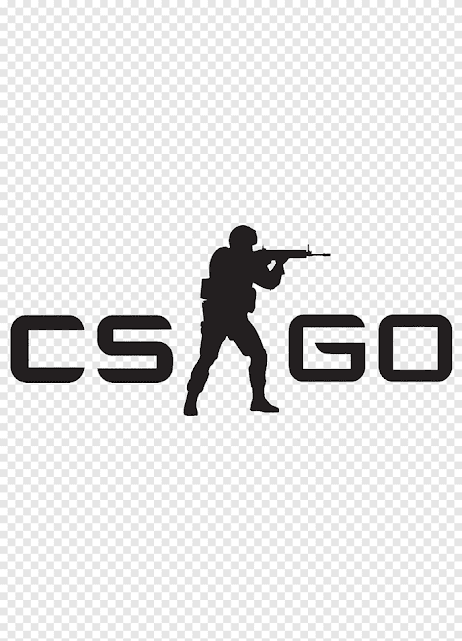

Los esports, o deportes electrónicos, son competiciones de videojuegos multijugador a nivel profesional o amateur, organizadas en ligas y torneos con reglas estrictas. Los jugadores (gamers) se entrenan intensamente para competir por premios, a menudo ante audiencias masivas, tanto online como en estadios presenciales.


League of Legends(LOL)
Counter Strike(CS)